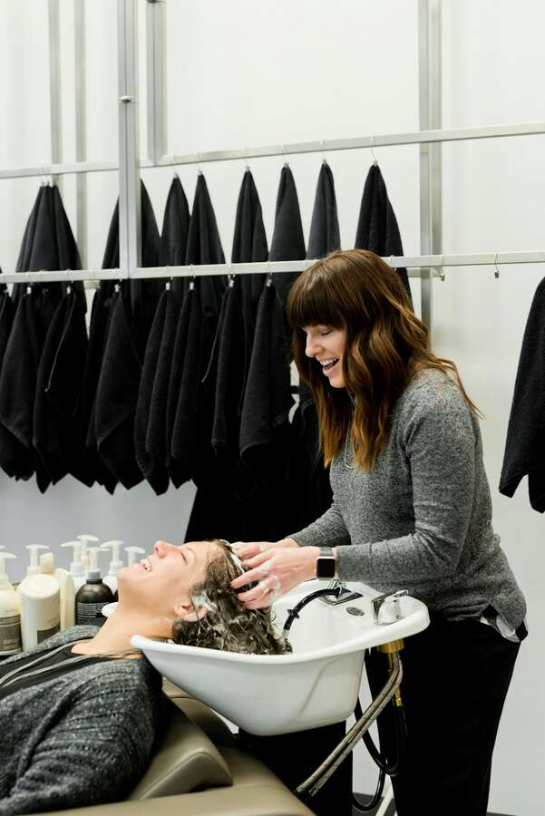
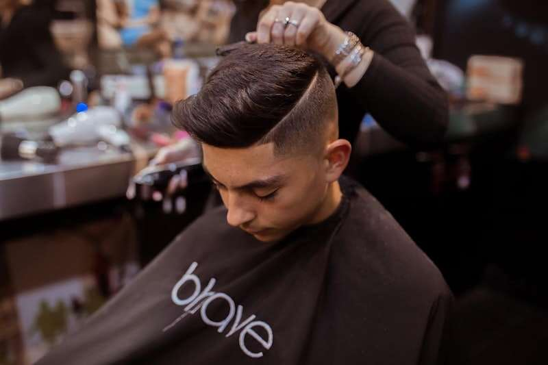
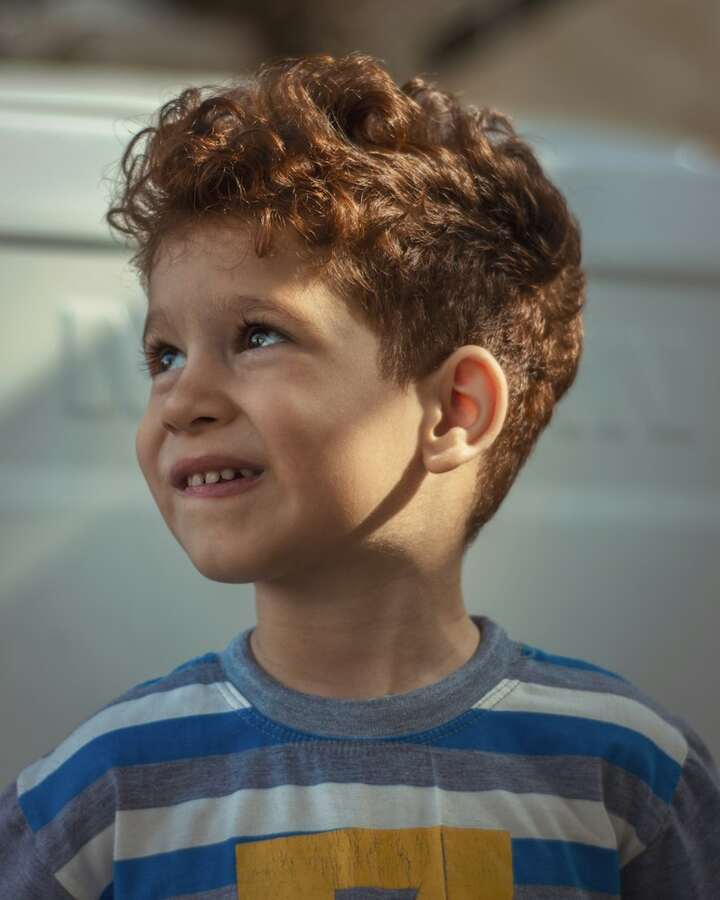
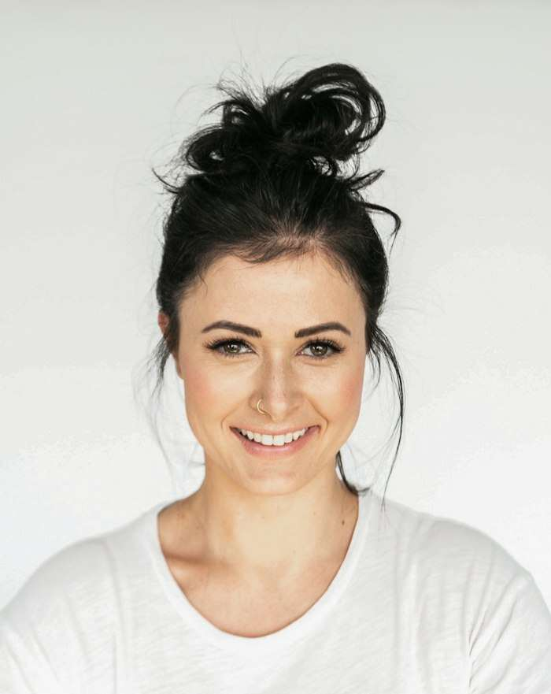
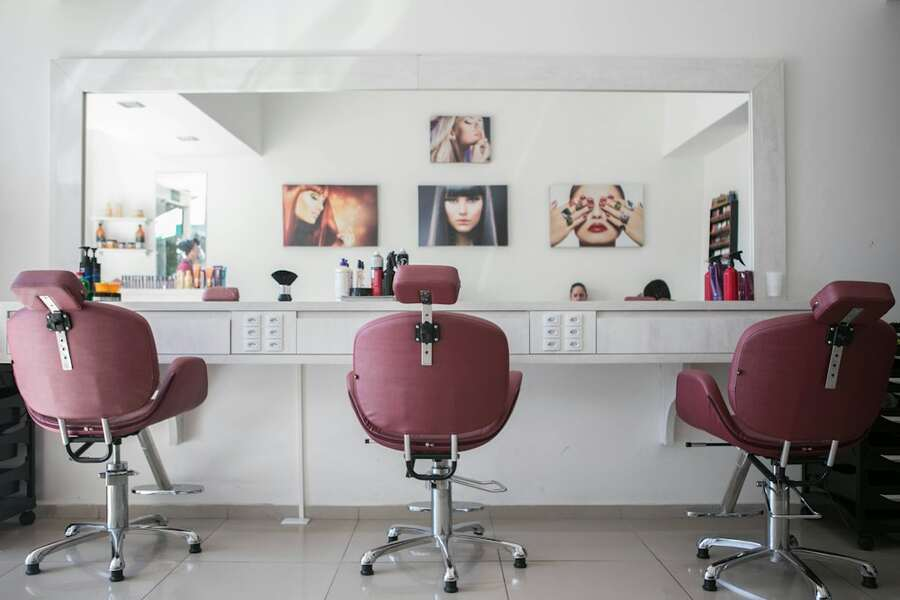
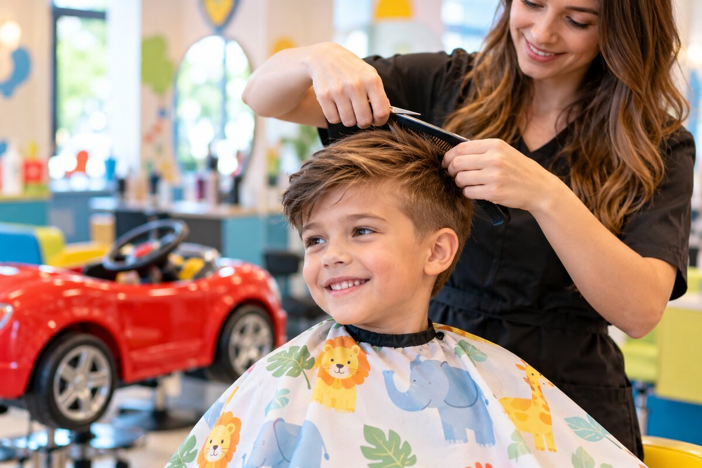
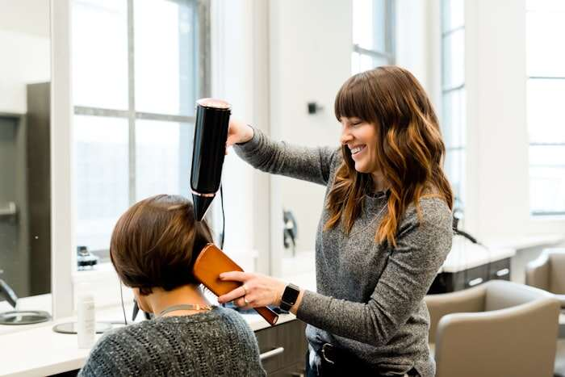
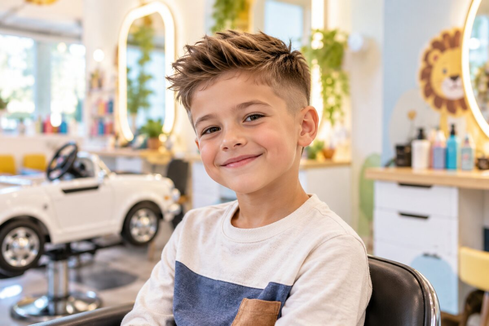

Первая стрижка малыша
Мягкое знакомство с процессом в удобном для ребёнка темпе.
от 1 400 ₽Бережно знакомим малышей со стрижкой, слышим пожелания подростков и помогаем каждому ребёнку почувствовать себя уверенно.

Услуги и цены
Стоимость фиксирована и известна до начала работы. В каждую услугу входят консультация и аккуратная укладка.
Мягкое знакомство с процессом в удобном для ребёнка темпе.
от 1 400 ₽Классическая или современная форма с учётом типа волос.
от 1 200 ₽Подравнивание или новая форма с лёгкой укладкой.
от 1 300 ₽Индивидуальный образ и детальная работа мастера.
от 1 600 ₽Аккуратные повседневные и нарядные варианты плетения.
от 900 ₽Образ для дня рождения, утренника или фотосессии.
от 1 800 ₽Выбор родителей


Наша команда
Каждый мастер умеет найти контакт с ребёнком, спокойно объясняет все действия и никогда не торопит.
Особенно бережно проводит первые стрижки и легко находит общий язык с малышами.

Специалист по длинным волосам, плетению и праздничным причёскам для девочек.
Создаёт стильные стрижки для мальчиков и подростков, учитывая их характер и пожелания.
Галерея
Светлый интерьер, удобные детские кресла и красивые образы наших маленьких гостей.




Отзывы родителей
Спасибо семьям, которые возвращаются к нам и рекомендуют мастеров друзьям.
Сын обычно боится машинки, а здесь сел в кресло-машинку и всю стрижку смотрел мультфильм. Антон был невероятно терпелив.
Елена, мама МишиМише 3 годаДочка сама выбрала причёску, мастер всё обсудила с ней как со взрослой. Получилось красиво и очень аккуратно.
Ольга, мама АлисыАлисе 9 летЧисто, спокойно, запись без ожидания. Наконец нашли место, после которого ребёнок спрашивает, когда придём снова.
Сергей, папа АртёмаАртёму 6 летКонтакты
Подберём удобное время и подскажем, как подготовить ребёнка к первой стрижке.
Оставьте контакты — администратор перезвонит, чтобы подтвердить время.